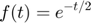

RPL05: Series de Fourier en tiempo continuo
Fernandez Santana Viviana Elizabeth
García Morales Pablo
Grupo: 2MV1
Contents
Objetivos
- Realizar gráficas de series de Fourier exponenciales y trigonométricas en tiempo continuo
- Manipulación de instrucciones en MATLAB
- Calculo númerico de los coeficientes de Fourier
Introducción
Podemos calcular Dn numéricamente mediante el uso de la DFT (la transformada discreta de Fourier analizada en la Sección 8.5), que utiliza las muestras de una señal periódica x (t) durante un período. El intervalo de muestreo es de T segundos. Por lo tanto, hay N0 = T0 / T número de muestras en un período T0. Para encontrar la relación entre Dn y las muestras de x (t), considere la ecuación.
<im1.jpg> (6.96) donde x (kT) es la kesima muestra de x (t) y
{kind=link}
<im2.jpg> ( 6.97)
{kind=link}
En la práctica, es imposible hacer que T ? 0 calcule el lado derecho de la ecuación. (6.96). Podemos hacer T pequeña, pero no cero, lo que hará que los datos aumenten sin límite. Por lo tanto, ignoraremos el límite de T en la ecuación. (6.96) con el entendimiento implícito de que T es razonablemente pequeño El valor distinto de cero T dará como resultado algún error de cálculo, que es inevitable en cualquier evaluación numérica de una integral. los el error resultante de una T distinta de cero se denomina error de aliasing o solapamiento. Por lo tanto, podemos expresar la ecuación. (6.96) como
<im4.jpg> (6.98a)
{kind=link}
Ahora, desde la ec. (6.97), ?0N0 = 2?. Por lo tanto, e^(j?0 (k + N 0)) = e^(j?0) k y de la ecuación., se deduce que
<im3.jpg> (6.98b)
{kind=link}
La propiedad de periodicidad Dn + N0 = Dn significa que más allá de n = N0 / 2, los coeficientes representan los valores para n negativo. Por ejemplo, cuando N0 = 32, D17 = D ? 15, D18 = D-14, ..., D31 = D ? 1. El ciclo se repite de nuevo desde n = 32 en. Podemos usar la FFT eficiente (la transformada rápida de Fourier ) para calcular el lado derecho de la ecuación. Nosotros Usaremos MATLAB para implementar el algoritmo FFT. Para este propósito, necesitamos muestras de x (t) en un período que comienza en t = 0. En este Algoritmo, también es preferible (aunque no necesario) que N0 sea una potencia de 2, es decir N0 = 2m, donde m es un número entero
Ejemplo 6.1
La función es: 
Con un intervalo de: 
Su serie es:
Por ende los valores que se introducen a la serie de fourier para 4 armonicos son:
d0=0.504; dn=@(n) 0.504/(1+4*n*j); t0=0; tf=pi; f=@(t) exp(-t/2); armo=4; a=-7; b=7; sfc(t0,tf,dn,d0,f,armo,a,b)
Para 15 armonicos:
armo=15; sfc(t0,tf,dn,d0,f,armo,a,b)
Ejemplo 6.2
La función es:
Con un intervalo de:
Su serie es:
Por ende los valores que se introducen a la serie de fourier para 4 armonicos son:
d0=0; dn=@(n) -(12*sin(pi*n/2))*j/((n^2)*(pi^2)); t0=-1; tf=1; f=@(t) (6.*(-t-1)).*((t>=-1)&(t<(-1/2)))+(6.*t).*((t>=(-1/2))&(t<(1/2)))+(6.*(1-t)).*((t>=(1/2))&(t<1)); armo=4; a=-7; b=7; sfc(t0,tf,dn,d0,f,armo,a,b)
Para 15 armonicos:
armo=15; sfc(t0,tf,dn,d0,f,armo,a,b)
Ejemplo 6.4
La función es:

Con un intervalo de:
Su serie es:
Por ende los valores que se introducen a la serie de fourier para 4 armonicos son:
d0=0.5; dn=@(n) sin((pi*n)/2)/(pi*n); t0=-pi; tf=pi; f=@(t) (0).*((t>=-(pi))&(t<(-pi/2)))+(1).*((t>=-(pi/2))&(t<(pi/2)))+(0).*((t>=-(pi/2))&(t<(pi))); armo=4; a=-7; b=7; sfc(t0,tf,dn,d0,f,armo,a,b)
Para 15 armonicos:
armo=15; sfc(t0,tf,dn,d0,f,armo,a,b)
Ejercicio 6.5
La función es:
Con un intervalo de:
Su serie es:
Por ende los valores que se introducen a la serie de fourier para 4 armonicos son:
d0=0; dn=@(n) (1/(1-(4*(n^2))))*(2/pi); t0=0; tf=pi; f=@(t) sin(t); armo=4; a=-7; b=7; sfc(t0,tf,dn,d0,f,armo,a,b)
Para 15 armonicos:
armo=15; sfc(t0,tf,dn,d0,f,armo,a,b)